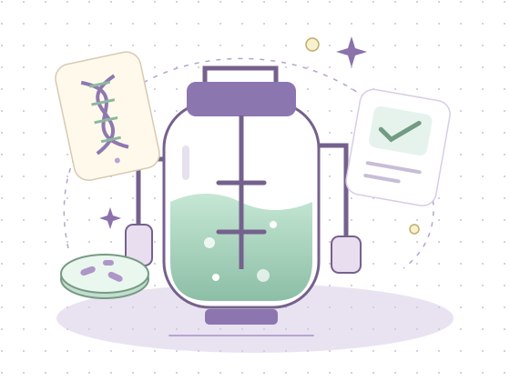

학습자료 + 빈 활동지
개념 자료 2쪽과 활동지 2쪽.
종이로 읽고 쓰고 싶을 때.
우리 동네에서 시작하는 생명기술.
오늘 우리는 오송 바이오 연구팀입니다.

청주 오송에는 생명과학단지와 첨단의료복합단지가 있어요. 신약과 의료기기 연구를 돕는 지역 기반을 출발점으로, 생명기술이 우리 삶을 어떻게 바꾸는지 살펴봅니다.
공식 지역 자료 읽기 ↗기술은 재료만으로 완성되지 않아요. 과정과 확인이 함께 필요해요.
↶ 되먹임은 끝에서 멈추지 않고, 앞선 투입과 과정을 더 좋게 만드는 연결입니다.
위·아래 버튼으로 카드를 옮겨 보세요. 품질 확인 결과는 과정 개선에도 쓰입니다.
여러분은 오송의 연구 환경에서 일한다고 상상하는 바이오 연구팀입니다. 인슐린 생산 사례를 바탕으로 품질을 일정하게 유지하거나, 낭비를 줄이거나, 접근성을 높이는 방안을 제안해 주세요. 효과뿐 아니라 걱정되는 점과 대책도 함께 담아 주세요.
실험 성능 수치나 비용을 임의로 만들어 쓰지 않아요. 연구 제안과 입증된 결과는 구분합니다.
품질
배양 조건과 검사 기록을 일정하게 관리하면 어떤 도움이 될까?
환경
물과 에너지 사용, 폐기물 처리를 함께 고려하려면?
접근성
생산량이 늘면 누구나 이용할 수 있을까? 비용과 공급 방식도 생각해 보자.
모둠의 생각을 나누고, 나의 생각을 한 걸음 더.
좋은 연구는 더 많이 만드는 것에서 끝나지 않아요.
누구에게 도움이 되는지, 무엇을 책임져야 하는지 묻는 데서 시작해요.
내 답안은 서버에 제출되지 않습니다. PDF를 저장해 선생님이 안내한 방법으로 제출해 주세요.
개념 자료 2쪽과 활동지 2쪽.
종이로 읽고 쓰고 싶을 때.
지금 입력한 생각과 모둠의 제안을
한글 PDF로 간직해요.
차시 운영, 예시 답안, 피드백 기준.
수업 준비를 위한 안내서.
공용 기기인가요? PDF 저장을 확인한 후 답안을 지워 주세요.
브라우저 데이터를 삭제하거나 다른 기기로 이동하면 자동 저장된 답안은 이어지지 않습니다.
2026학년도 중3 · 2015 개정 기술·가정
[9기가04-08] 생명기술 시스템과 활용 분야·발달 전망 / [9기가04-09] 생명기술의 특징과 개인·사회에 미치는 영향. 이 차시는 시스템과 영향 분석에 초점을 두며 단원 전체를 대체하지 않습니다.
MCP로 확인한 후속 교육과정
2022 개정 [9기가04-10] 의료 분야 생명기술 사례와 영향 평가, [9기가04-11] 문제 해결과 생명 존중·윤리. 중3에는 2027학년도부터 적용되며, 본 차시의 2015 개정 기준과 구분합니다.
자료 확인: 2026-11-01 · 교과서 본문이나 기관 로고를 복제하지 않은 수업용 재구성 자료입니다. 특정 기관과의 공식 협업이나 학교의 공식 홈페이지를 뜻하지 않습니다. 사례의 생산 과정은 학습을 위해 단순화했습니다.